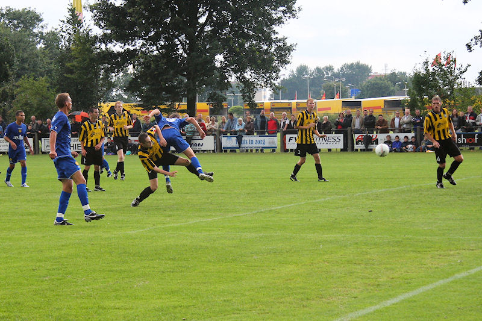

Ook in Nederweert regent het bijna onophoudelijk bij het oefenduel tegen
vierdeklasser Merefeldia.
Begin-opstelling Roda: Castro, Saeijs, De Fauw, Kah, Lachambre, Vormer,
Janssen, Linssen, Bodor, Junker, Hadouir,
Delorge en Van Tornhout wandelen voorbij op enige afstand gevolgd door een
mismoedigd kijkende Matondo. Gommans stond langs de lijn
terwijl Vandamme, Tyton en De Wree zich droog hielden in de kantine.
Alle corners worden genomen door Bodor.
Vormer in actie op een droog moment.
Na een stroef begin opent Vormer de score in de 12e minuut.

Twee minuten later gaat een kanonskogel van Hadouir erin.
Niet gespeeld, toch gescoord. Vandamme wordt pappa.
Gommans ziet dat het goed is. De stand is inmiddels 0-7, na een 0-6
ruststand.
Beginopstelling tweede helft: Mardulier, De Fauw, Addo, Kah, Knops, Janssen,
Vormer, Sutchuin Djoum, Staelens, Meulens, Hadouir.
Op de voorgrond Sutchuin Djoum, op de achtergrond de gekortwiekte Meulens.
Mardulier hoeft bijna geen werk te verrichten en ziet zijn ploeg
uiteindelijk tot 0-14 uitlopen.